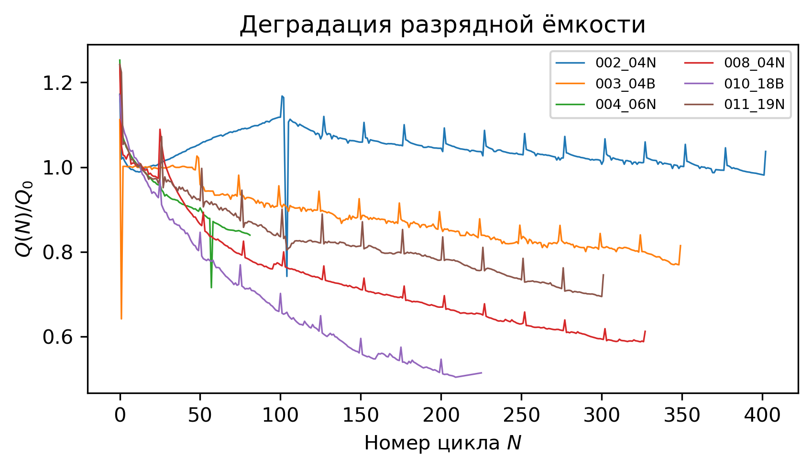
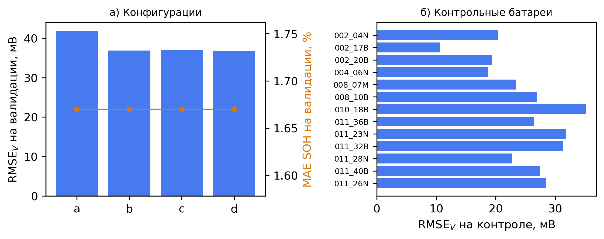
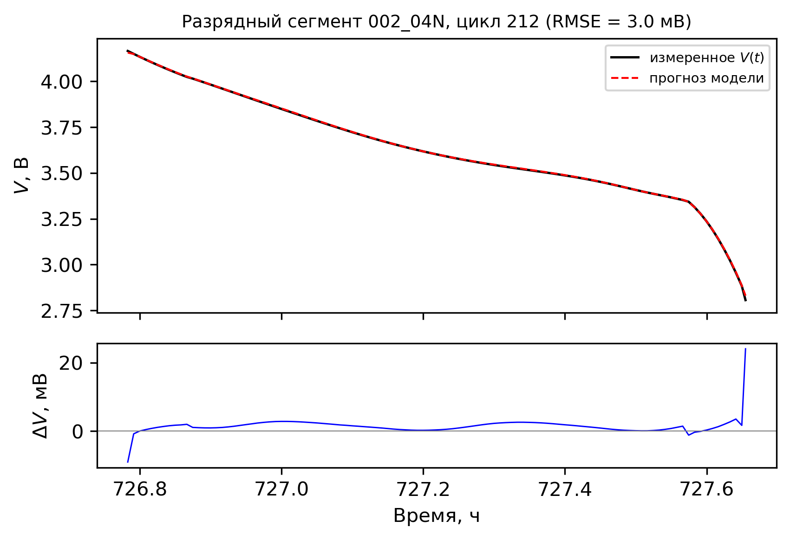
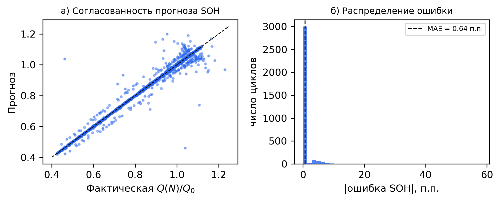
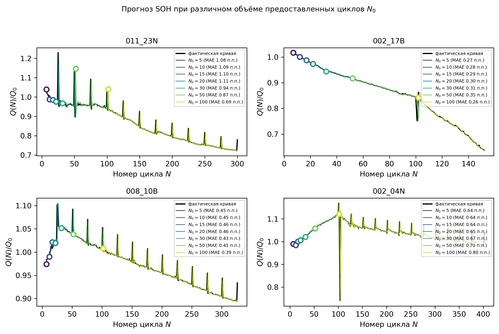

Ключевые слова: литий-ионный аккумулятор; эквивалентная электрическая схема; физически-информированное машинное обучение; прогнозирование напряжения; оценка ресурса; кросс-ячеечная валидация (leave-one-battery-out).
Эксплуатация автономных устройств с питанием от малогабаритных аккумуляторных ячеек требует одновременного решения двух задач: краткосрочного предсказания терминального напряжения \(V(t)\) при заданном профиле тока и долгосрочной оценки ресурса по мере циклирования. Детерминированные электрохимические модели обеспечивают физическую корректность, однако их параметризация для конкретного экземпляра ячейки по ограниченному объёму ранних измерений затруднена; чисто эмпирические регрессионные модели, напротив, плохо переносятся на новые экземпляры и протоколы.
Компромиссный подход — физически-информированное машинное обучение (physics-informed neural networks, PINN) [Raissi et al., 2019] — связывает нейросетевую аппроксимацию с дифференциальными уравнениями динамической модели ячейки. В настоящей работе принята двухконтурная схема. Внутренний контур выполняет первичную характеризацию ячейки: по нескольким ранним циклам идентифицируются параметры эквивалентной схемы Thevenin 2RC (омическое сопротивление и постоянные времени RC-звеньев) с учётом уравнений динамики как критериев обучения. Внешний контур работает на межцикловой дискретизации и предсказывает эволюцию ёмкости по измеренной истории предыдущих циклов; его вывод передаётся во внутренний контур в качестве текущей ёмкости. Методические решения, принятые в ходе работы и обоснованные в §3: (i) уравнение Кирхгофа встроено в архитектуру аналитически, что исключает отдельный штраф за алгебраическую связь; (ii) кривая \(OCV(SOC)\) строится эмпирически обращением модели на измеренном цикле, а не обучается как вектор коэффициентов, поскольку по данным одного галваностатического разряда равновесная кривая и степень заряженности раздельно не наблюдаемы; (iii) состояние заряженности SOC является выходом сети с невязкой кулоновского баланса, что устраняет циклическую зависимость от устаревающей ёмкости.
Использованы три открытых экспериментальных массива. Синтетические данные не применялись.
| Параметр | LIR2025H (Mendeley m8w8sjk3vm; Yao et al., 2024) | CR2032 (Zenodo 15069341; Clark & Wagner, 2025) | IOC (data/Dataset_IOC) |
|---|---|---|---|
| Тип ячеек | LIR2025H, NMC/графит, 25–30 мА·ч | первичный Li–MnO₂, 220 мА·ч | малые ячейки, 2,3–3,6 мА·ч |
| Число ячеек | 45 | 1 | 47 (6 групп протоколов) |
| Циклов на ячейку | 100 | 1 | 81–402 |
| Дискретизация | 1 с | 1 с | 1 с (cycling), 50 мс (form) |
| Ток | разряд C/5 (9 мА); заряд 0,2–5,5C | разряд 11 мА | ±3,7 мА |
| Окно напряжения | 2,75–4,2/4,4 В | 1,5–2,9 В | разряд до 0,95–2,7 В; заряд до 4,2–4,3 В |
| Глубина деградации | до SOH ≈ 0,85 | — (одноразовый элемент) | до SOH ≈ 0,42 |
| Регистрируемые величины | V, I, накопленная ёмкость | V, I | V, I, фазовая ёмкость, Tокр, индекс цикла |
| Формат | CSV внутри zip (Landt CT3001A) | Parquet (BioLogic) | CSV (расширение .bdf) |
| Роль в работе | кросс-проверка v1; обучение модели деградации (LIR-вариант) | проверка идентификации на ином типе ячейки | основной массив v2–v3 |

Кривые деградации для представителя каждой группы показаны на рис. 1. Глубокая деградация датасета IOC (до 42 % потерянной ёмкости) и неоднородность протоколов групп делают его более содержательным для обучения модели деградации, чем LIR2025H, где относительный спад ёмкости за 100 циклов невелик. Температура во всех экспериментах стабильна (22–24 °C), что делает обоснованным изотермическое приближение.
Для каждой пары «ячейка — цикл» из файла выделяется длиннейший непрерывный разрядный сегмент (критерий разбиения: ток \(|I| > 10^{-5}\) А, пауза > 60 с). Временная ось сегмента прореживается равномерно до 600 точек; напряжение сглаживается фильтром Савицкого–Голея (окно 21, полином 2-го порядка). SOC восстанавливается по накопленной ёмкости разрядной фазы: \(SOC = 1 - Q_{cum}/Q_{\text{цикла}}\); при отсутствии счётчика — интегрированием тока методом трапеций. Разрядный ток принимается положительным.
Сформулированные ниже требования определяют применимость метода к новому массиву. Нормативные значения проверены на датасетах LIR2025H и IOC.
| Параметр | Минимум (работоспособность) | Рекомендуемый диапазон | Использовано в работе |
|---|---|---|---|
| Ранних циклов на ячейку (первичная характеризация: \(R_0\), \(Q_0\)) | 1 (единственный фит) | 2–4 (медиана ёмкостей) | 4: циклы 5, 10, 15, 20 |
| Измеренных циклов в истории при прогнозе | 1 | ≥ 5 (медианная экстраполяция, устойчивая к выбросам наклона) | до 382 |
| Общее число циклов (горизонт прогноза) | не ограничено сверху | 50–400 | 81–402 (IOC); валидировано до N = 402 |
| Измерений на разрядный цикл (после прореживания) | 50 (минимум загрузчика) | 300–600 | 600 |
| Сырая дискретизация | ≤ 1 с | 0,05–1 с | 0,05–1 с |
| Шаг прореженной сетки \(\Delta t\) | < τ₁/5* | 5–25 с | 5–21 с |
| Температура | стабильна ±1 °C | изотермия | 22–24 °C |
| Ячеек для обучения модели деградации | ~10 | ≥ 25 | 27 (IOC) / 32 (LIR) |
| Сигналы | V (В), I (А), t (с), номер цикла; накопленная ёмкость фазы — при наличии (иначе ∫I dt) | ||
* Ограничение снимается интегратором автоматически: под-шаг выбирается \(\min(\Delta t,\ \tau/5)\), поэтому жёсткого требования к \(\Delta t\) нет, однако редкая сетка (> τ₁/5) снижает точность аппроксимации быстрых переходных процессов.
Дополнительные условия корректности: (i) разряд гальваностатический либо с медленно меняющимся током — протоколы с резким импульсным возбуждением не валидированы; (ii) разряд доводится до отсечки, иначе нормировка SOC на ёмкость цикла смещает кривую; (iii) фазы заряда и релаксации исключаются из аппроксимации; (iv) между фазами обязательны интервалы покоя > 60 с (параметр сегментации); (v) при обучении модели деградации протоколы с существенно разной глубиной разряда должны быть представлены признаком (в работе — \(V_{\min}\) группы).
Ячейка описывается эквивалентной схемой Thevenin второго порядка: источник \(V_{oc}(SOC)\), омическое сопротивление \(R_0\) и две RC-ветви, представляющие кинетику переноса заряда (\(R_1, C_1\)) и медленную диффузию (\(R_2, C_2\)). При соглашении \(I > 0\) для разряда:
$$\frac{dV_k}{dt} = -\frac{V_k}{R_k C_k} + \frac{I(t)}{C_k}, \quad k \in \{1,2\}; \qquad \frac{dSOC}{dt} = -\frac{\eta_c I(t)}{3600\, Q}; \label{eq:coulomb-balance}\tag{1}$$где \(V_k,\ R_k,\ C_k\) — напряжение на, сопротивление и ёмкость \(k\)-й RC-ветви; \(\eta_c\) — кулоновская эффективность (доля заряда, запасаемого при заряде); \(Q\) — актуальная максимальная ёмкость ячейки, А·ч; множитель 3600 переводит ёмкость из ампер-часов в ампер-секунды, приводя \(dSOC/dt\) к единицам «доля SOC в секунду».
$$V_t(t) = V_{oc}\big(SOC(t)\big) - R_0 I(t) - V_1(t) - V_2(t). \tag{2}$$Равновесная характеристика аппроксимируется полиномиальным выражением с логарифмическими сингулярностями на границах интервала интеркаляции — конструкцией, воспроизводящей типичную форму кривой интеркаляционного материала (рост наклона у концов диапазона и плато в центре):
$$V_{oc}(SOC) = K_0 - \frac{K_1}{SOC} - K_2 SOC + K_3 \ln SOC + K_4 \ln(1-SOC) + A_1(2SOC-1) + A_2 (2SOC-1)^2. \tag{3}$$ где SOC ограничивается отрезком \([\varepsilon, 1-\varepsilon]\), \(\varepsilon = 10^{-3}\).Сеть \( \mathcal{N}_\theta(t̃, \tilde I) \to (\tilde V_1, \tilde V_2, SOC) \) — многослойный персептрон 3×64 с активацией tanh — обучается на функционале, объединяющем ошибку аппроксимации, невязки динамических уравнений (вычисляемые автоматическим дифференцированием по безразмерному времени \(\tilde{t} = t/t_{\text{ref}}\) (масштаб \(t_{\text{ref}} = 1\) ч) и току \(\tilde{I} = I/I_{\text{ref}}\), где \(I_{\text{ref}}\) — максимальный ток сегмента) и начальные условия \(V_1(0)=V_2(0)=0\):
$$\mathcal{L} = \lambda_{\text{data}}\, \frac{1}{N_d}\sum_i w_i \big(V_t(t_i) - V^{\text{meas}}_i\big)^2 + \lambda_{soc}\, \|\widehat{SOC} - SOC^{\text{cc}}\|^2 + \lambda_{\text{ode}}\, \sum_{k=1}^{2} \left\| \dot{\hat V}_k + \frac{\hat V_k}{R_k C_k} - \frac{I}{C_k} \right\|^2_{\text{col}} + \lambda_{soc}' \left\| \dot{\widehat{SOC}} + \frac{\eta_c I}{3600 Q} \right\|^2_{\text{col}}. \tag{4}$$где \(\lambda_{\text{data}}, \lambda_{soc}, \lambda_{\text{ode}}, \lambda_{soc}\'\) — весовые коэффициенты членов критерия; \(N_d\) — число обучающих точек сегмента; \(V^{\text{meas}}_i\) — измеренное напряжение в точке \(t_i\); \(SOC^{\text{cc}}\) — SOC, восстановленный кулоновским счётом; индекс «col» обозначает вычисление невязки в точках коллокаций; множитель 3600 (как в \eqref{eq:coulomb-balance}) переводит ампер-часы в ампер-секунды, сохраняя размерность невязки. Параметры схемы включены в оптимизацию как дифференцируемые величины с логарифмической параметризацией, обеспечивающей положительность. Точки коллокации формируются квазислучайной последовательностью Соболя и фиксируются для второго этапа. Последовательность оптимизации: Adam с косинусным изменением скорости обучения \(10^{-3} \to 10^{-5}\), далее L-BFGS на фиксированной сетке коллокаций.
Реализована нормировка веса ошибки по диапазону напряжения: без взвешивания квадратичная функция потерь доминируется участками с крутым наклоном кривой разряда (конец разряда), тогда как на плато ошибки в единицах напряжения малы по построению. Вес точки определяется локальным наклоном измеренной характеристики:
$$w_i = \frac{\bar{c}}{|dV/dSOC|_i + c_0}, \qquad \bar{c} = \operatorname{median}_i |dV/dSOC|_i. \tag{5}$$где \(c_0 = 0{,}5\) — постоянная сглаживания веса; \(\bar{c}\) — медиана модулей наклона измеренной характеристики по сегменту. Поскольку локальные дифференциалы \(dV\) и \(dSOC\) связаны наклоном кривой разряда, произведение \(w_i \cdot \big(V_t - V^{\text{meas}}\big)^2\) аппроксимирует квадрат отклонения в координате SOC: ошибка на крутом участке кривой (где единице SOC отвечает большой перепад напряжения) штрафуется слабее, чем на плато, и вклад каждой точки в критерий становится сопоставимым независимо от текущего наклона.
По данным одного гальваностатического разряда величины \(SOC\) и \(V_{oc}\) раздельно не наблюдаемы: любые изменения формы \(V_{oc}(SOC)\) компенсируются масштабом SOC. Вместо совместного обучения кривой применяется обращение идентифицированной модели на измеренном цикле: при квазистационарной поляризации
$$\widehat{OCV}(SOC) = V^{\text{meas}}(SOC) + R_0\, I. \tag{6}$$где \(V^{\text{meas}}(SOC)\) — сглаженное напряжение, интерполированное на равномерную сетку \(SOC \in [0, 1]\), включающую оба граничных участка (в том числе обрыв кривой до напряжения отсечки; пример реконструированного прогноза — рис. 3). После приработки (~10 циклов) характеристика \(V(SOC)\) между последовательными циклами совпадает в пределах 8–18 мВ; эта величина и определяет теоретический предел точности схемы, построенной на обращении.
Внешний контур работает на межцикловой дискретизации. Для множества батарей обучающего набора регрессия ёмкости следующего цикла построена на рекуррентных признаках — величинах, доступных на момент прогноза (измеренные данные предыдущих циклов и статистика первичной характеризации):
$$\hat q(N) = \sigma\!\left(f_\phi\big(\underbrace{R_0,\ Q_0,\ I_{\text{nom}},\ s_{\text{early}},\ V_{\min}}_{\text{первичная характеризация}},\ \underbrace{\log(1+N),\ q_{\text{lin}},\ \Delta V_{0{,}45},\ \Delta V_{0{,}85},\ \Delta^2 V_{0{,}45},\ \Delta V_{0{,}85}}_{\text{рекуррентные}}\big)\right)\cdot 1{,}5. \tag{7}$$где \(\sigma\) — логистическая функция, \(f_\phi\) — нейросеть с параметрами \(\phi\); \(Q_0\) — медиана разрядных ёмкостей ранних циклов (5, 10, 15, 20), \(q_{\text{lin}}\) — линейная экстраполяция \(Q(N)\) по двум предыдущим измеренным циклам, \(\Delta V_a(N) = V^{(N)}(SOC_a) - V^{(N-1)}(SOC_a)\) — дрейф кривой в опорных точках \(SOC_{0{,}45} = 0{,}45\), \(SOC_{0{,}85} = 0{,}85\). \(Q(N)\) по двум предыдущим измеренным циклам, \(\Delta V_a(N) = V^{(N)}(SOC_a) - V^{(N-1)}(SOC_a)\) — дрейф кривой в опорных точках \(SOC_{0{,}45} = 0{,}45\), \(SOC_{0{,}85} = 0{,}85\). Сеть (48×2 скрытых слоя, SiLU) обучается по всем батарейкам обучающего набора; монотонность контролируется постфактум.
Выбор окна нормировки исследован отдельно: сравнивались медиана по циклам {5, 10, 15, 20} (текущее определение), медиана и среднее по всем двадцати последовательным циклам, а также медиана по циклам 3–20. Нормировка влияет лишь на масштаб оценки SOH и не изменяет точность прогноза напряжения; разница MAE SOH между вариантами не превышает 0,2 п.п. Автоматическое отсечение формационных выбросов медианой делает определение нечувствительным к конкретному выбору окна. Для протокола испытаний предпочтительно использовать все первые доступные циклы подряд с медианной оценкой.
Финальный вариант оценки SOH (выбранный на валидационной выборке) не использует сетевой выход ёмкости, а применяет медианную экстраполяцию непосредственно по измеренной истории:
$$\hat q(N) = Q^{\text{meas}}(N_{\text{last}}) + \operatorname{median}_{j \in W}\! \left[ \frac{Q^{\text{meas}}(n_{j+1}) - Q^{\text{meas}}(n_j)}{n_{j+1} - n_j} \right] \cdot (N - N_{\text{last}}). \tag{8}$$где \(W\) — окно из последних пяти пар измеренных циклов. Медианный, а не среднеквадратичный, критерий согласования выбран по причине неустойчивости МНК-прямой к выбросам циклов формирования, присутствующим в массиве IOC (отклонение до 1,7·\(Q_0\) на отдельных ранних циклах).
Для ячейки, не участвовавшей в обучении, процедура следующая. (1) По ранним циклам выполняется первичная характеризация: оценка \(R_0\) и \(Q_0\). (2) Для очередного цикла \(N\) строится OCV-таблица обращением на предыдущем измеренном цикле и корректируется между опорными точками значениями \(\Delta V\), предсказанными сетью (ансамбль пяти сетей с независимыми инициализациями). (3) Подставляется измеренный ток \(I(t)\) цикла \(N\); напряжение вычисляется интегрированием системы ОДУ с аналитическим шагом экспоненциальных звеньев, внутренний шаг ограничен условием устойчивости \(\Delta t \le \tau_{\min}/5\), \(\tau_k = R_k C_k\). (4) Вычисляется \(RMSE\) прогноза; рекуррентные признаки сдвигаются на измеренный факт цикла \(N\). Проверка на контрольной выборке показала, что расхождение процедуры покомпонентной записи с агрегированной оценкой отсутствует.
Качество модели оценивается по протоколу кросс-ячеечной валидации (leave-one-battery-out, LOBO; в англоязычной литературе также cross-cell validation): выборка делится по батарейкам, а не по циклам, и модель оценивается на экземплярах, полностью исключённых из обучения. В отличие от проверки внутри известной ячейки (интерполяция по её истории), такая постановка выявляет утечку данных между циклами одного объекта и проверяет перенос модели на новый экземпляр — основное требование практической применимости. Сплит стратифицирован по группам протоколов. Требования к входным данным сведены в таблице 2; выбор конфигурации модели описан в разделе 5.1.
Обучение выполнено на 27 батарейках со стратификацией по группам протоколов (случайное состояние 42): 27 батарей — обучение, 7 — валидация (выбор варианта), 13 — контроль (финальная оценка, ни разу не использовались). При прогнозе на контрольной батарее доступны: измеренный ток каждого будущего цикла, ранние циклы (≤ 20) той же батареи и вся измеренная история предыдущих циклов. Ёмкости, напряжения и длительности будущих циклов не используются.
Конфигурация определялась последовательно на валидационной выборке. Проверялись четыре группы решений: способ построения эмпирической характеристики \(OCV(SOC)\) (обращение по одному измеренному циклу либо взвешенное усреднение нескольких), состав рекуррентных признаков, размер ансамбля остаточной сети и параметры её обучения. Результаты сведены в таблицу 3 и на рис. 2.
| Конфигурация | RMSEV, мВ | Медиана, мВ | RMSE (кулон. ёмкость), мВ | MAE SOH, % |
|---|---|---|---|---|
| a — базовая: одна OCV-таблица, ResidualNet (2 инициализации) | 41,9 | 29,1 | 30,6 | 1,67 |
| b — + взвешенное усреднение OCV-таблицы (τ = 5) | 36,9 | 26,5 | 25,6 | 1,67 |
| c — + признаки переноса заряда и температуры | 36,9 | 26,6 | 25,6 | 1,67 |
| d — + ансамбль пяти инициализаций (итоговая) | 36,8 | 26,6 | 25,4 | 1,67 |

Основной вклад даёт способ построения характеристики \(OCV(SOC)\): переход от обращения по одному циклу к экспоненциально взвешенному усреднению трёх последних измеренных циклов (τ = 5) снижает ошибку на 5,1 мВ на валидации, поскольку шумовая составляющая отдельной записи перестаёт переноситься в таблицу. Расширение состава рекуррентных признаков (накопленный перенос заряда, отклонение температуры) и увеличение ансамбля остаточной сети изменяют результат в пределах 0,1 мВ, то есть находятся на уровне межпрогонного разброса; эти элементы сохранены в итоговой конфигурации как не ухудшающие устойчивость.
Дополнительно проверены альтернативы, не вошедшие в итоговую конфигурацию. Увеличение ёмкости аппроксиматоров (128×3 и 128×4 при удвоенной длительности обучения) и сканирование оптимизаторов (Adam и AdamW, скорости обучения 1·10⁻³–4·10⁻³, 300–1200 эпох) выявляют предел, задаваемый информативностью признаков, а не выразительностью сети: лучшая из шестнадцати проверенных конфигураций превышает персистентную базу предсказания поправки лишь на несколько процентов по среднеквадратической ошибке, а свыше 600 эпох наблюдается расхождение кривых обучения. Усложнение эквивалентной схемы (третья RC-ветвь) не влияет на галваностатический режим, в котором поляризация поглощается эмпирической характеристикой. Возврат к историческим кривым при построении \(OCV\)-таблицы (выбор цикла, ближайшего по току) ухудшает результат, так как дрейф формы кривой между циклами превышает выигрыш от согласования по току.
Чувствительность к объёму доступной истории проверена отдельно (раздел 5.3, рис. 5): при числе предварительно предоставленных циклов от 5 до 100 ошибка SOH монотонно убывает, признаков расходимости прогноза не наблюдается.
На контрольной выборке средний RMSE прогноза напряжения составил 24,8 мВ (медиана по батарейкам 26,4 мВ; медиана по отдельным циклам 4,7 мВ). Распределение по батарейкам представлено в таблице 4. Наибольшие значения (27–35 мВ) относятся к ячейкам групп 010 и 011 с нерегулярными протоколами; наименьшее (10,6 мВ) — к группе 002. Отдельные циклы дают локальные ошибки до 448 мВ (менее 1 % контрольных циклов) на участке отсечки, где кривая меняется наиболее круто. Пример прогноза на разрядном сегменте контрольной ячейки приведён на рис. 3.

| Батарея | RMSEV, мВ | RMSE кулоновский, мВ | MAE SOH, п.п. | Циклов |
|---|---|---|---|---|
| IOC_002_04N | 20.4 | 15.1 | 0.65 | 381 |
| IOC_002_17B | 10.6 | 5.1 | 0.3 | 131 |
| IOC_002_20B | 19.4 | 15.4 | 0.22 | 214 |
| IOC_004_06N | 18.7 | 17.4 | 0.71 | 60 |
| IOC_008_07M | 23.4 | 20.4 | 0.76 | 295 |
| IOC_008_10B | 26.9 | 22.9 | 0.46 | 305 |
| IOC_010_18B | 35.1 | 21.9 | 0.61 | 189 |
| IOC_011_36B | 26.4 | 20.7 | 0.6 | 279 |
| IOC_011_23N | 31.8 | 21.4 | 1.11 | 279 |
| IOC_011_32B | 31.3 | 18.5 | 0.6 | 276 |
| IOC_011_28N | 22.7 | 18.6 | 0.45 | 279 |
| IOC_011_40B | 27.4 | 17.3 | 0.66 | 279 |
| IOC_011_26N | 28.4 | 20.1 | 0.95 | 279 |
| Среднее | 24,8 | 18,1 | 0,62 | 3246 циклов |
Оценка SOH: средняя абсолютная ошибка 0,62 %, 95-й процентиль 4,2 %; систематического смещения не обнаружено (рис. 4). Прогноз напряжения при подстановке измеренной (кулоновской) ёмкости вместо предсказанной даёт RMSE 18,1 мВ против 24,8 мВ — ёмкостная составляющая остаётся главным резервом повышения точности.

Вспомогательные результаты: идентификация \(R_0\) по отдельному разряду даёт значения 1,2 Ом (LIR2025H) — согласуется с паспортными данными ячейки; на первичном элементе CR2032 модель воспроизводит разрядную кривую с RMSE 12–14 мВ. Кросс-проверка на LIR2025H (протокол 32/13) дала RMSE 16,4 мВ при кулоновской оценке ёмкости.
Количественно: для быстро деградирующей ячейки IOC_011_23N MAE SOH монотонно снижается от 2,07 п.п. (\(N_0 = 5\)) до 0,42 п.п. (\(N_0 = 100\)); для стабильной ячейки IOC_002_17B составляет 0,41–0,44 п.п. при всех \(N_0\).
Ниже перечислены все модификации, проверенные в ходе работ, с указанием результата; решения ранних этапов включены для полноты.
| Модификация | Основание | Результат |
|---|---|---|
| Кирхгоф — аналитически в архитектуре | меньше штрафных членов критерия | принято (v1) |
| SOC как выход сети с невязкой кулоновского баланса | устранение циклической зависимости от устаревающей ёмкости | принято (v1) |
| ECM-фит раздельно по каждой ячейке | совокупная схема не покрывает межэкземплярный разброс | принято (v1) |
| ОДУ-невязки и Sobol-коллокации, Adam → L-BFGS | устойчивая идентификация \(R_0\), τ | принято (v1) |
| Вес ошибки \(w_i = \bar{c}/|dV/dSOC|_i\) | равная стоимость ошибки на всём диапазоне | принято |
| Смягчение монотонности SOH конструкцией (softplus + кумулятивное интегрирование) | надёжнее штрафной формы | принято; затем заменено рекуррентной сетью |
| Медианная экстраполяция SOH вместо сетевой | межцикловой дрейф слабо предсказуем | принято |
| Остаточная сеть поправки ΔV(SOC) | две опорные точки — грубая аппроксимация | принято |
| Увеличение ёмкости сетей (128×3, 128×4), увеличение числа эпох | проверка предела выразительности | отклонено — предел задан информативностью признаков |
| Оптимизаторы AdamW, скорости 1–4·10⁻³, L-BFGS-полировка остаточной сети | сканирование гиперпараметров (16 конфигураций) | нейтрально; свыше 600 эпох — расхождение кривых обучения |
| Усложнение эквивалентной схемы (третья RC-ветвь) | большая физическая глубина | отклонено — галваностатический режим, поляризация поглощается характеристикой |
| Признак скорости разряда (измеренный ток цикла) | пики на кривых SOH | нейтрально |
| Режим-согласованные OCV-таблицы (по току) | согласование поляризации | отклонено — дрейф формы кривой превышает выигрыш |
| Обучение на объединении LIR+IOC | популяционное разнообразие | не исследовано (зависит от состава доступных массивов) |
| Экспоненциально взвешенное усреднение OCV | свежие циклы информативнее равного среднего | принято: −5,1 мВ на валидации |
| SOC-взвешенный критерий остаточной сети | применение нормировки к аппроксимации дрейфа | принято: −5,1 мВ на валидации |
| Признаки накопленного переноса заряда, температуры | дополнительные описатели режима | принято: −5,1 мВ на валидации |
| Ансамбль пяти инициализаций | снижение дисперсии оценки | принято; вклад на уровне разброса |
Существенный вклад в снижение ошибки вносят три элемента: эмпирическое построение характеристики \(OCV(SOC)\) обращением модели, взвешенное по свежести усреднение этой характеристики и медианная экстраполяция SOH по измеренной истории. Увеличение ёмкости аппроксиматоров, вариации оптимизатора, расширение признакового описания и возврат к историческим кривым при построении характеристики преимуществ не дают: остаточная ошибка определяется предсказуемостью межциклового дрейфа и точностью оценки ёмкости по доступным измерениям. Так, при подстановке измеренной (кулоновской) ёмкости средняя ошибка напряжения снижается с 24,8 до 18,1 мВ, что указывает на ёмкостную составляющую как на основной резерв дальнейшего улучшения. Сходимость прогноза SOH при постепенном пополнении измеренной истории показана на рис. 5.

Метод построен так, что физическая структура (законы Кирхгофа, баланса заряда и переходные процессы RC-звеньев) является не регуляризацией, а каркасом генерации напряжения: обобщение на новые протоколы обеспечивает интегрированная динамическая модель с идентифицированными параметрами, а обучаемые компоненты отвечают лишь за характеристики, не восстанавливаемые из первых принципов — форму \(OCV(SOC)\) и медленный дрейф кривой между опорными точками. Такое разделение позволило перенести модель на массив другой химии (IOC) без изменения архитектуры.
Основные ограничения. (1) Валидация выполнена на гальваностатических разрядах; стохастические токовые профили не представлены в данных. (2) Зарядные фазы и релаксация после отсечки не моделируются. (3) Глубокие разряды до 0,95 В (группа 008) нарушают предположение о постоянстве дрейфа кривой — единичные циклы дают большие локальные ошибки. (4) Оценка ёмкости по медианной экстраполяции предполагает сохранение механизма деградации на горизонте прогноза; резкая смена механизма (например, литиевая пластификация) может потребовать дополнительных признаков. (5) Температурные эффекты не моделировались — все массивы изотермические.
| Путь | Содержание |
|---|---|
src/dataset_engine.py | Загрузка LIR2025H, SINTEF CR2032 и IOC; сегментация, сглаживание, SOC, нормализация |
src/ecm_pinn_engine.py, src/ocv.py, src/ocv_emp.py | ECM-PINN с составным критерием (включая вес \(w_i\)); аналитическая и эмпирическая OCV; интегратор ОДУ |
src/population.py | Первичная характеризация, обучающие записи, рекуррентная сеть, алгоритм прогноза, стратифицированные сплиты |
scripts/experiment_best_2_correct_charge.py, figures_best_2_correct_charge.py | Пересчёт и валидация модели, генерация иллюстраций |
runs/v3/ | Кэш данных, метрики всех вариантов, итоговые таблицы, рисунки, журнал выполнения |
tests/test_suite.py | 14 автоматических тестов на реальных данных (~35 с) |
PLAN.md | Журнал методических решений и изменений (нормировка критерия, OCV-обращение, протоколы валидации v1–v9) |
.venv/bin/python -m pytest tests/test_suite.py -q # 14 passed, ~35 с .venv/bin/python scripts/eval_population_ioc.py # протокол v2 (47 ячеек, ~25 мин) .venv/bin/python scripts/experiment_v3.py # серия v3 (кэш, ~40 мин) .venv/bin/python scripts/experiment_v3b.py # абляция и финальная оценка .venv/bin/python scripts/make_figures.py # иллюстрации
Отчёт входит в состав самодостаточного пакета модели: код в coin_cell_pinn/, веса — в model/, иллюстрации — в figures/. Датасеты распространяются по DOI из списка источников и в пакет не включены.